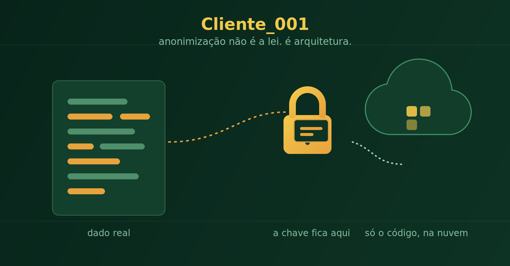

On anonymizing data — without hiding behind the law
The opening chapter of a series on forensic accounting, data protection law, and AI.
Here's a question my accounting training never prepared me for, because it didn't exist yet: if a client sends you a list of 5,000 products to classify for tax purposes, and you need AI to handle that volume, how do you actually guarantee confidentiality for whoever hired you?
The stock answer everyone reaches for is "I anonymize the data." After months of trying to poke holes in that sentence from every angle, I landed on something nobody had told me before: anonymization isn't a property of the data. It's a relationship between the data and whoever is reading it.
One example makes this clearer than any legal definition. Take a parts listing from a motorcycle supply chain, stripped of logo, letterhead, and company name anywhere in the file. It could have come from the manufacturer, a reseller, a repair shop, or a used-parts distributor. Strip the branding, and whoever receives that file — me, an AI, another firm — has no way to tell which of the four it is. From the processor's point of view, that file is genuinely anonymous. And here's the lesson nobody teaches: the same file, at the same moment, can be anonymous to one recipient and completely identifiable to another — if that other party already knew, through some other channel, whose data it was before the file even arrived. Anonymization doesn't survive a conversation that already gave away the name before the document showed up.
The second lesson is about how to actually do this, and it tends to surprise people who've worked with sensitive data for decades: you don't ask an AI to "anonymize" a spreadsheet. That sounds counterintuitive — isn't that exactly what AI is for? Not here. Asking a language model to swap names and mask IDs across a table with thousands of rows opens the door for it to give the same person two different aliases in different parts of the table, or silently skip a row — and in a financial audit, that quietly destroys the very thing you were trying to prove. Real anonymization is done by a deterministic script, almost artisanal in its simplicity: a lookup table that consistently swaps "John Doe" for "Client_001", row after row, no exceptions — and that lookup table never leaves your machine. Only the file with the aliases goes anywhere else, cloud included. Whoever receives it processes "Client_001" without ever holding the key that maps it back to the real name. That's not a vague compliance promise — it's an architecture you can sketch on paper and hand to any auditor.
And here's the most ironic part of the whole journey: the AI that seemed to be the confidentiality problem is exactly why this kind of deterministic script became indispensable — not just for accountants, but for any profession now processing sensitive data too fast to do by hand and too consequential to trust blindly to a tool that "understands" text but guarantees nothing about determinism. Before AI, we made mistakes out of fatigue and deadline pressure. Now, if you don't design the right architecture, the mistake arrives wrapped in a fluent, confident answer — which is far more dangerous than an obvious typo.
There's no such thing as guaranteed 100% anonymization. I learned that too, and I'd rather say it out loud than fake a certainty the math doesn't give me. What exists is well-engineered, documented risk management, honest about where it stops — which is the exact opposite of sweeping the AI under the rug to look more trustworthy.
This is the start of a series I intend to keep publishing: not a legal handbook, but a field report from someone who had to solve this in practice, without a single book on the shelf covering this exact intersection of forensic accounting, data protection law, and AI. If you live on that same edge, the next chapters are for you. I'd genuinely welcome pushback — tell me where this reasoning breaks.
Disclosure: I'm a Brazilian forensic/court-appointed accountant (perito contábil), not a developer or a lawyer. This piece — and the series — records personal, experimental reflections, tested in practice rather than settled by statute or case law. It may contain errors, get revised, or simply be wrong in the next installment. It isn't professional or legal advice for your specific situation; it's an invitation to argue with a colleague thinking through the same problem in real time.
← Back to all articles
Comments
Comments are moderated: your message is emailed to me and published after review.